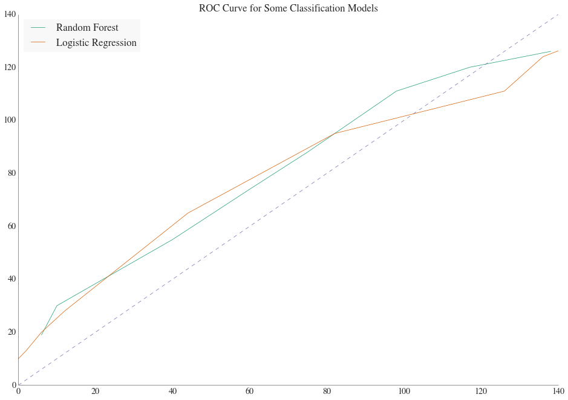

Making Predictions
Using the Profiles of the Supreme Court Justices
Now that we have a decent understanding of who the Justices are and how they tend to vote, are there any there any insights that can be gleaned from that information obtained from our exploratory analysis? More specifically, can we predict the outcome of Supreme Court rulings based solely on the voting profiles of the Justices reviewing the case.
The first model we construct is a simply binary decision tree: if a case in a particular issue area is brought forth to be reviewed by the court, then we assume the Justice will vote similar to is past votes in that particular issue area. For example, if a Justice votes conservatively more than 50% of the time on Civil Rights case, than they will likely vote conservatively on the next Civil Rights case they review. Using this logic, we sum the likely direction of each Justices vote and then compare this result to the actual direction of the case. On average, this method yields a 60.4% correct prediction rate.
But are there better ways to predict which direction a Justice will vote on a particular? To answer this question we construct two more sophisticated models using random forrest classifier and logistical regression. In order to use a random forrest classifier or logistic regression, we must select features or variable that will help determine the direction of a vote. Using the features of case’s law type, reason for reviewal, and the legal issue in question, the direction of each Justice’s vote is predicted. The results of these models are shown in the figure below:

The normalized integral of the ROC curve represents the prediction rates, which in this case are 65% and 66% for the random forest and logistic regression models, respectively.
Success! On average, these more sophisticate models can now predict the direction 5-6% better than just using the previous voting patterns.
On a finally note, while one might raise the question of why try to predict direction and not actual outcome, prediction of direction is actually a value result. Each case that is brought forth to be reviewed by the SC has much nuance and actual decisions the court makes has to account for this variability of cases. Thus, to try to attempt to predict the actual decisions would require a fund of knowledge of law and is beyond the scope of this project. However, ultimately each decision that is rendered by the Supreme Court does have a direction of affirming or staying a liberal/conservative issue. Therefore, to someone with the skill set to analyze the case that is before the court and can determine if the central question is liberal or conservative, our model would be an invaluable tool in predicting the outcome the case.